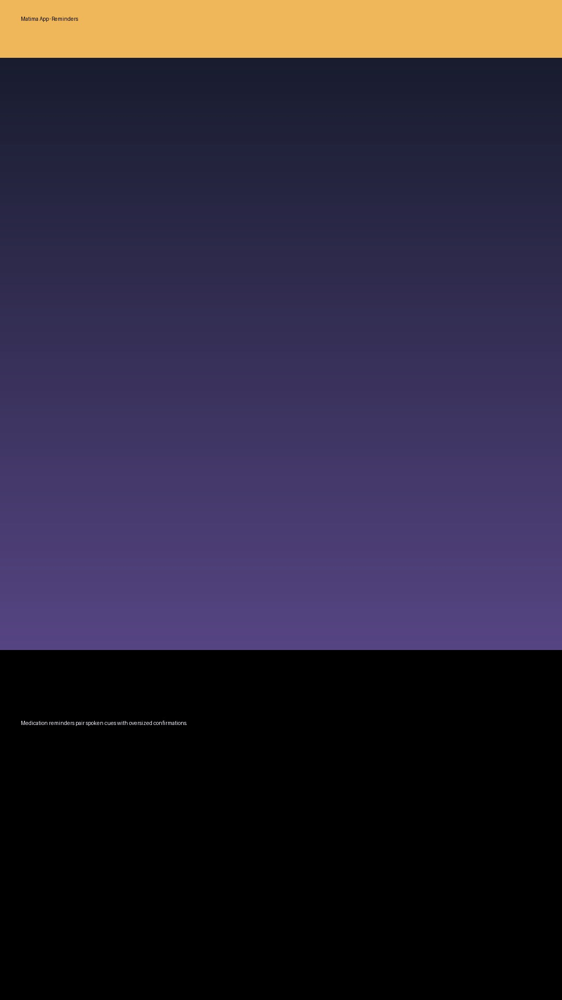
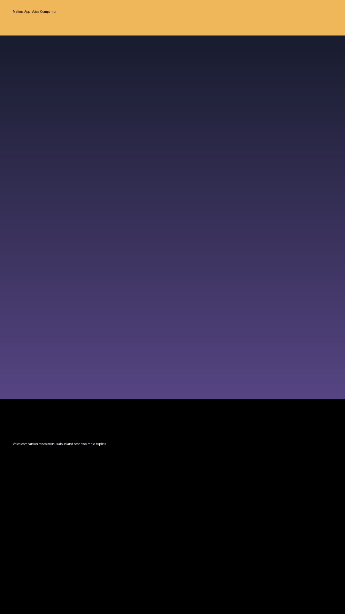

Overview
Matima reimagines the smartphone interface for elderly users. Larger touch targets, high-contrast typography, and clear voice feedback make it easy to place calls, find contacts, and follow medication plans. Caregivers can manage reminders remotely, ensuring the experience stays supportive without being intrusive.
Key Features
- Home screen with customizable quick actions for calls, video chats, and safety alerts.
- Medication reminders with text-to-speech confirmations and snooze controls.
- Emergency contact carousel that can be reached in two taps.
- Remote configuration portal for relatives or medical staff.
- Accessibility-first color palette and typography tested with real users.
Tech Stack
- Flutter, Dart, Provider state management.
- Text-to-Speech APIs (Google TTS) for audible prompts.
- Firebase Authentication and Firestore for caregiver management.
- Custom animations optimized for low-end devices.
Gallery



Outcomes
- Achieved a 95% task completion rate during accessibility testing sessions.
- Reduced missed medication reminders by delivering proactive follow-ups.
- Enabled families to configure support remotely without needing physical access to the device.
Links
- Google Play: Closed beta (available on request)
- GitHub: Private Flutter repository (access granted to partners)
- Contact for partnership